BEAST 2 In Practice
BEAST 2 Workflow
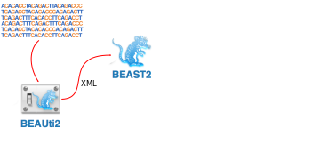
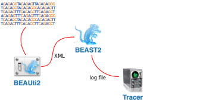
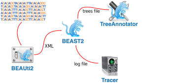
 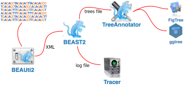
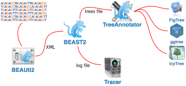
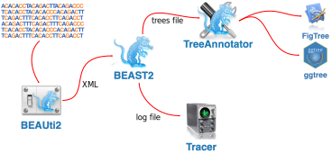
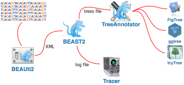
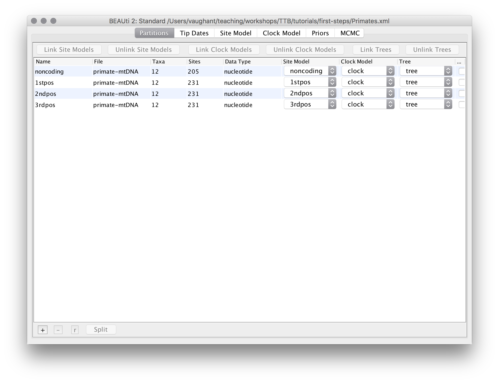
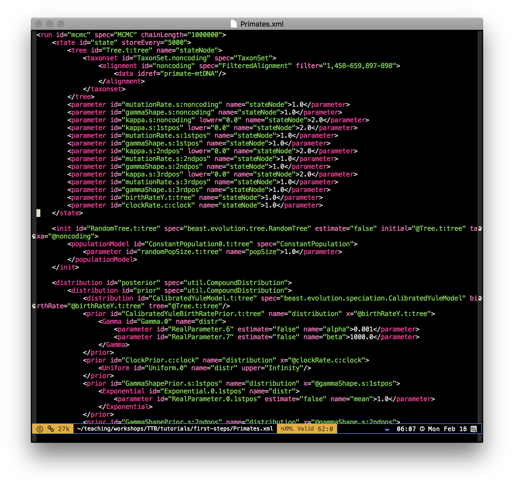
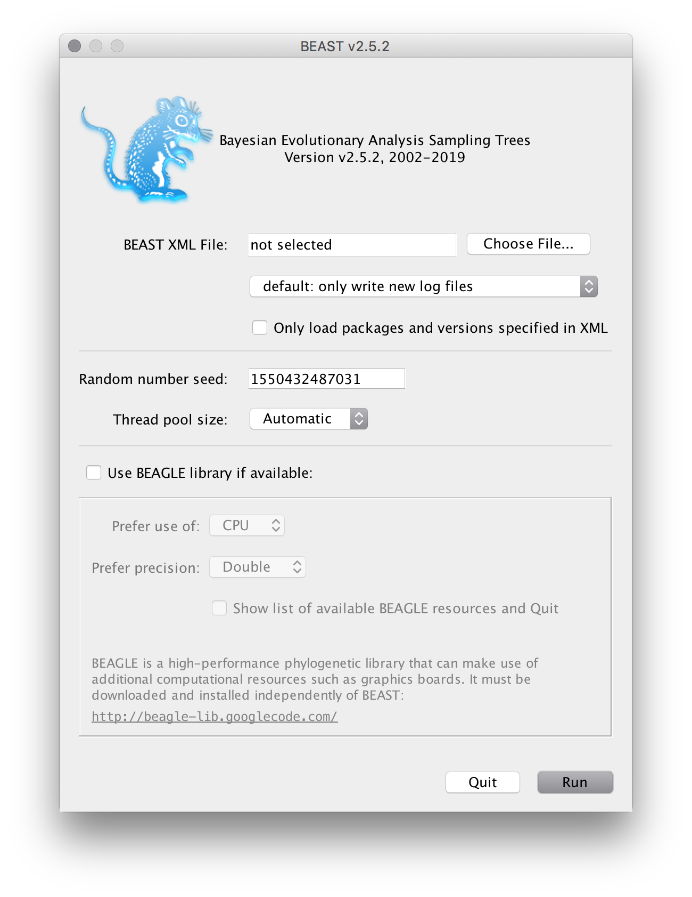
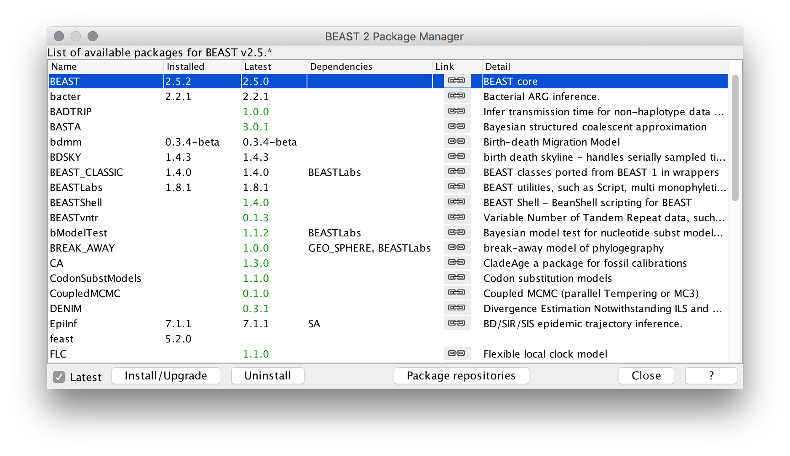
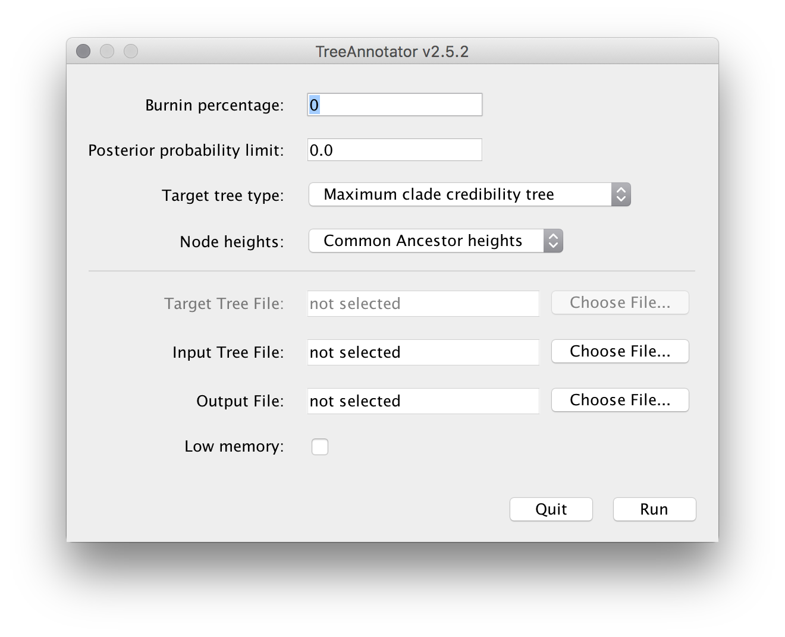

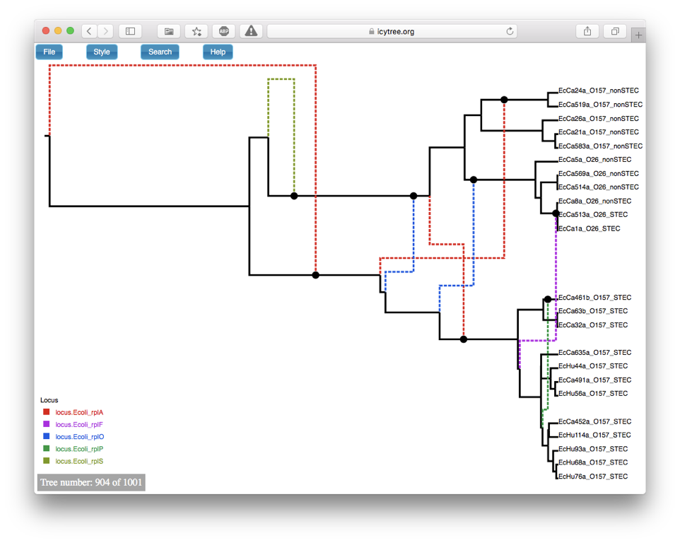
ggtree
 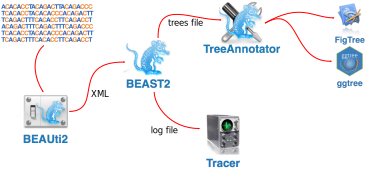
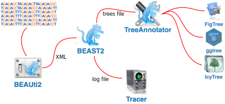
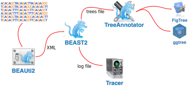
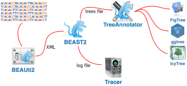
BEAUti: Bayesian Evolutionary Analysis Utility
Graphical tool for setting up a BEAST analysis.
- Input
- Genetic sequence data, together with other data sources (locations, sample times, etc.)
- Output
- Compact XML description of data, model and prior distributions.
BEAUti: Bayesian Evolutionary Analysis Utility
BEAUti: Bayesian Evolutionary Analysis Utility
BEAST 2: Bayesian Evolutionary Analysis by Sampling Trees
- Performs MCMC analyses of sequences under selected sequence evolution and tree (epidemiological/speciation) model.
- Similar to BEAST 1.8.4/1.10 but completely separate and generally incompatable.
- BEAST2 and BEAST1 have a common origin, have much of the same functionality but have diverged over time.
- BEAST2 has a modular design that makes it easy to extend.
- Input
- XML model description file
- Output
- (Trace) log file
- Tree (log) file
BEAST 2: Bayesian Evolutionary Analysis by Sampling Trees
BEAST 2 Packages
- BEAST 2 is organized into a central "core" together with a large number of separate "packages".
- Packages can be developed by anybody - including you!
- Can be directly integrated into BEAST 2 and updated frequently without waiting for a full BEAST 2 release.
- Packages add new models or completely new functionality
:
- Phylogeography,
- bacterial ARG inference,
- morphological models,
- model selection and averaging,
- stochastic simulations,
- ...
- Install new packages through BEAUti.
BEAST 2 Packages
Tracer (http://beast.community)
- Analyse (parameter) log files from BEAST2 runs
- Assess mixing, ESS, ACT, parameter correlations
- Provides overview of posterior parameter estimates
- Comparisons of several analyses.
- Tracer is primarily a diagnostic tool — usually want to perform final analyses in a statistical package like R.
- Input
- One or more log files
- Output
- Insight
Tracer (http://beast.community)
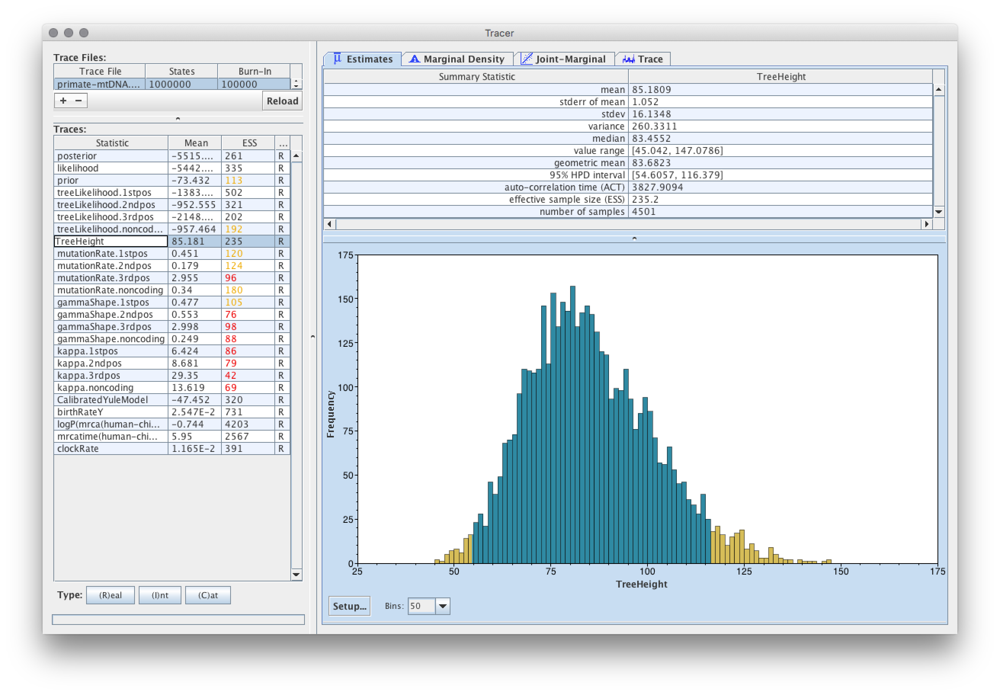
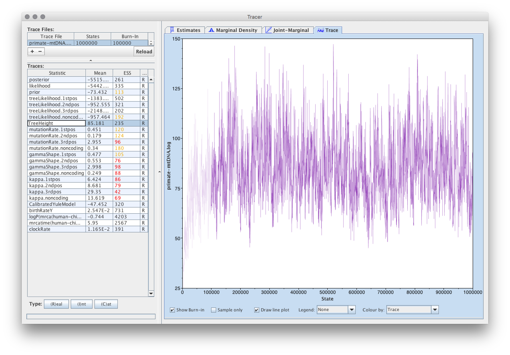
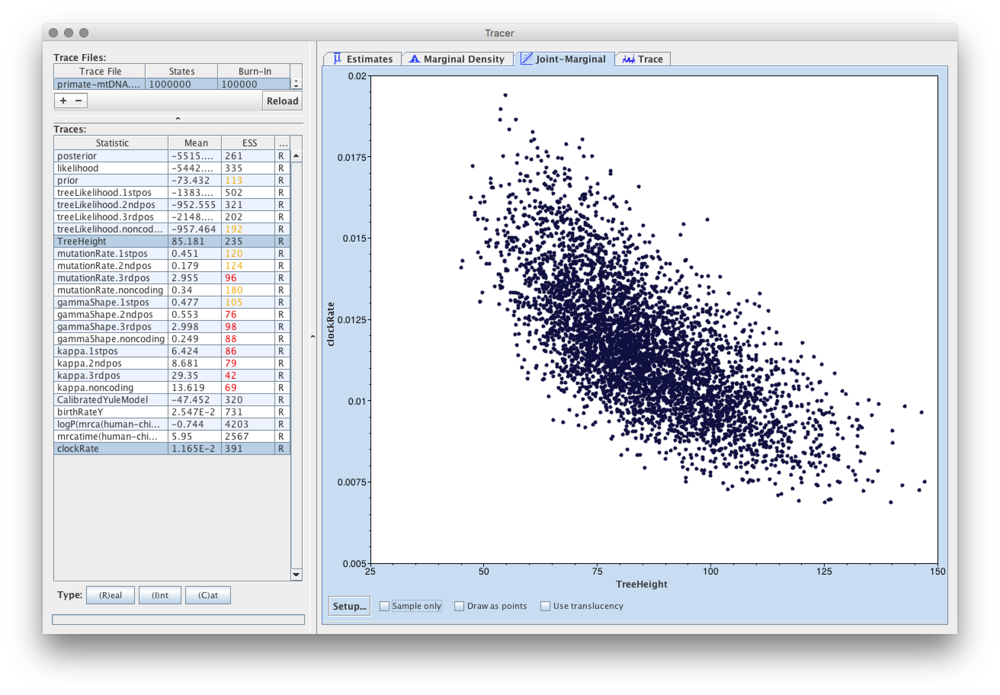
TreeAnnotator (included with BEAST 2)
- Analyse trees file from BEAST2 runs.
- Produces single summary tree with node annotations (including clade posterior probabilities).
- Positions internal nodes according to average taxon set MRCA times in trees file.
- Note that the MCC tree is just a heuristic summary: may produce negative edge lengths when topological uncertainty is large!
- Input
- Tree log file
- Output
- File containing annotated summary tree
TreeAnnotator (included with BEAST 2)
FigTree (tree.bio.ed.ac.uk/software/figtree/)
- Visualise trees from BEAST2 runs.
- Annotate branches and nodes with probabilities and labels.
- Many different tree visualisation styles: circular, unrooted, etc.
- Allows highlighting of particular clades, colouring of edges and more.
- Input
- Tree file (eg. TreeAnnotator output)
- Output
- Tree visualisation
FigTree (tree.bio.ed.ac.uk/software/figtree/)

IcyTree (icytree.org)
- Similar to FigTree, but places an emphasis on quick visualisation rather than publication quality output.
- Only rooted rectangular style visualisation supported.
- Rudimentary support for phylogenetic networks.
- Web app: no installation required, just visit icytree.org.
IcyTree (icytree.org)
ggtree
(guangchuangyu.github.io/software/ggtree/)
- R-package to visualise trees using something like Hadley Wickham's grammar of graphics (ggplot)
- Works with BEAST2 tree files (and many other packages)
- Can be easily annotate trees with other analyses in R
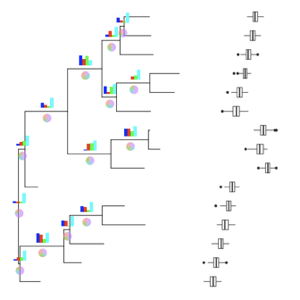
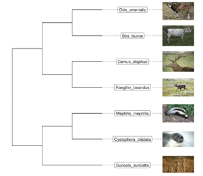
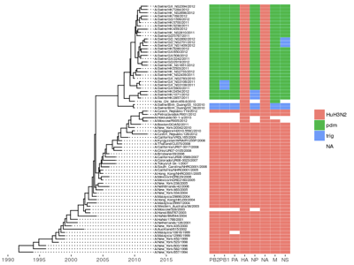